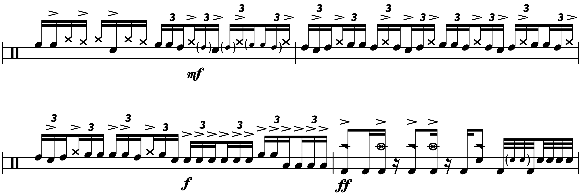

Transcription: “Hispterminate” — Richard Kass with Thunkfish

There are deep cuts… and then there’s this. I told you I would be back with something interesting!
Over at r/drumming (a subreddit that’s basically the cooler relative of r/drums) someone asked for help in making sense of a drum solo in the tune “Hipsteriminate” by a band called Thunkfish. The group plays a style of music they refer to as PTHRONK (apparently spelled in all caps). It’s some rather aggressive funk/fusion with a bit of djent and ska thrown in, not to mention a bunch of sampling.
The band is certainly what you would call “up and coming”; I can’t imagine how the OP found these guys. The drummer (Richard Kass) does appear to be the most high–profile member of the band, having played with guys like Corey Henry, Snarky Puppy’s (former) virtuoso keyboard player.
Anyway, the last ~40 seconds of the tune feature a drum solo over a backing vamp; the same lick is used as ensemble figure that opens the tune:
It’s a bit… jagged to say the least. If you look closely may notice the 16th note patterns of 5, 5, 5, 6, 5, & 6. I was tempted to notate it in 16/16, but I don’t know if that would have cleared anything up.
I’m pretty sure the band is just riffing on the note E, but they could be playing a chord. I’m not very good with harmonies, but I’m guessing the tune is in E minor since the the main riff is built around E, B, Bb, G, & E. Whatever, the rhythm is correct at least.
Kass toys with the backing part for a few measures before filling in all the 16th notes, making heavy use of what sounds like snare drum rick clicks (played as double stops):

Perhaps the most interesting part occurs in the 5th line: a rather disorienting lick built with 16th note triplets. It’s an eight note pattern that really gets started on the “+” after three. It’s quiet gnarly, but the hi hat helps keep it all together (as it happens to be playing quarter note triplets):
I’m a little unsure of the toms, since I’ve seen the drummer use as many as six; but I think I hear two rack toms and a floor tom, which is an increasingly uncommon setup for professional drummers to use these days.
After the funky triplets, Kass dishes out a flurry of 32nd notes to take the solo to its climax. Believe it or not, the penultimate measure was the most challenging — it’s a frenzy of notes and the timing gets a little loosey goosey. I’m guessing the drummer ad–libbed the final moments.
I took a brief look at the groove afterward. I’m also unclear on the cymbals; I think I hear a china/stack/ozone/something in there. Whatever, I got the rhythms down. I somewhat tempted to send this to Kass so he can check my work, since there’s a decent chance he may actually respond. We’ll see…
“Hipsterminate” on Spotify and Apple Music.
Posted on January 31, 2021
Tags: 2021 • Transcription • Richard Kass • Thunkfish